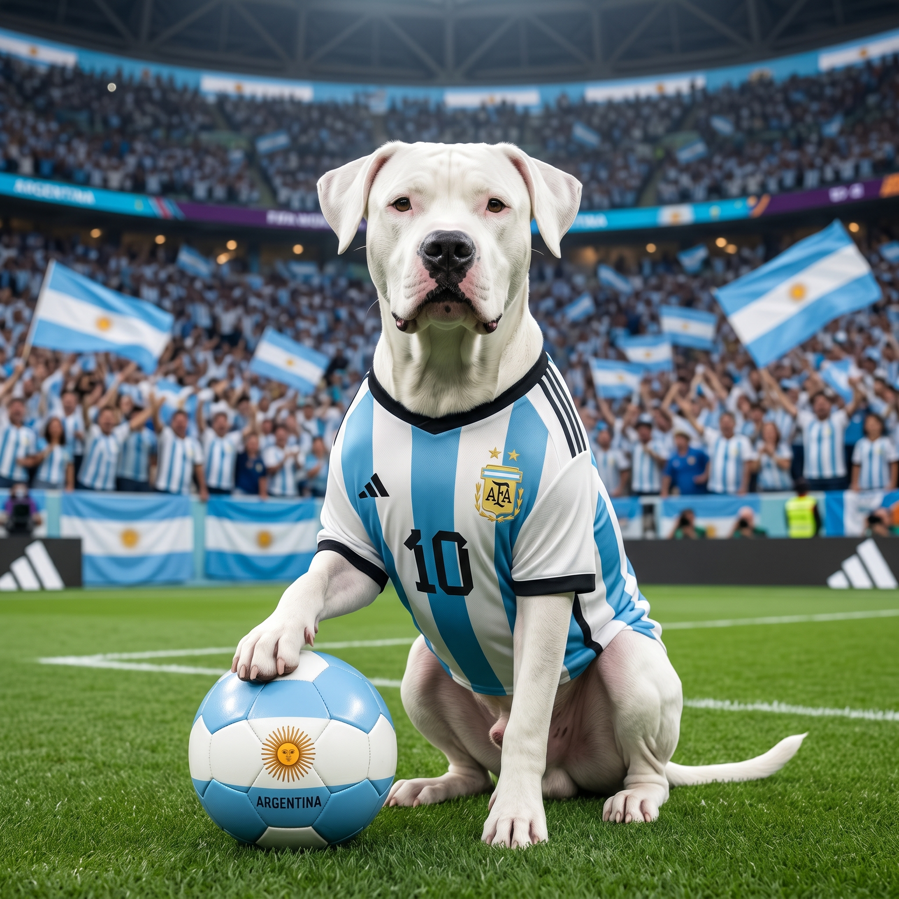

Perros Mundialistas 2026

Prompt para copiar
GENERADOR AUTOMÁTICO DE PERRO MUNDIALISTA ENTRADA DEL USUARIO País: [ESCRIBIR NOMBRE DEL PAÍS] INSTRUCCIONES PARA LA IA Analiza el país indicado por el usuario. Verifica que la selección nacional de fútbol de ese país haya participado al menos una vez en una Copa Mundial de la FIFA. Identifica la raza de perro más representativa, emblemática, histórica o asociada culturalmente con ese país. Si el país posee una raza autóctona reconocida, utilízala. Si el país no posee una raza autóctona claramente identificable, selecciona una raza de perro ampliamente asociada con dicho país por origen, popularidad o reconocimiento cultural. Genera UNA SOLA IMAGEN hiperrealista fotográfica. ESCENA Un adorable perro de la raza seleccionada aparece como la mascota oficial de la selección nacional del país indicado. El perro debe: Vestir la camiseta oficial de la selección nacional de fútbol del país. Mostrar una expression tierna, simpática y divertida. Estar sentado o de pie sobre el césped de un estadio profesional. Tener una pelota de fútbol junto a una de sus patas delanteras o debajo de ella. Mirar hacia la cámara. Ser el protagonista absoluto de la imagen. ESTADIO El estadio debe incluir: Público realista en las tribunas. Banderas nacionales del país. Ambiente de partido internacional. Iluminación profesional de estadio. Profundidad de campo cinematográfica. Ambiente festivo y alegre. ESTILO VISUAL Ultra photorealistic Hyper realistic Photojournalism quality 4K Ultra detailed fur Realistic eyes Professional sports photography National team jersey details Cinematic lighting Depth of field HDR Sharp focus Natural colors Premium sports magazine cover quality Cute and funny mood Family friendly Award-winning photography COMPOSICIÓN Formato cuadrado 1:1 Perro centrado Cuerpo completo visible Pelota claramente visible Estadio completo de fondo Gran sensación de orgullo nacional REGLA IMPORTANTE La raza seleccionada debe corresponder específicamente al país ingresado. Ejemplos: Argentina → Dogo Argentino Alemania → Pastor Alemán Inglaterra → Bulldog Inglés Francia → Caniche (Poodle Francés) Japón → Akita Inu México → Chihuahua Portugal → Perro de Agua Portugués Bélgica → Pastor Belga Malinois Generar únicamente la imagen final hiperrealista.